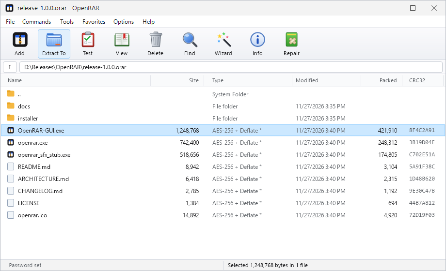

What is OpenRAR?
OpenRAR is a clean-room, open-source file archiver written from scratch in portable C++20 with zero external build dependencies. No Electron, no runtime bloat, no ads, and no 40-day trial popups.
It ships with a native Win32 desktop GUI on Windows (the entire portable bundle is under 1 MB),
a cross-platform command-line tool (openrar), a standalone Self-Extracting Archive (SFX)
builder, and Windows Explorer right-click menu integration.
Free to use, fork, and improve: Everyone is welcome to contribute and collaborate on GitHub. Charging for or reselling this software as a paid digital product is strictly forbidden.

Key Features
- Fast Multi-Threaded Compression: Native C++20 RFC 1951 Deflate/Inflate engine with dynamic Huffman coding, lazy LZ77 matching, and multi-core compression (2,200+ MB/s on 24 threads).
- Strong Encryption & Security: AES-256-GCM authenticated encryption, optional filename/header encryption (
-hp), CRC32 + SHA-256 integrity checks, and Zip-Slip path traversal protection. - Built-In Archive Repair (
-rr): Interleaved 512-byte sector parity recovery records reconstruct damaged.orararchives bit-for-bit. - Full Daily-Driver Toolset: Split volumes (
.partN.orar/.partN.zip), standalone Self-Extracting Archives (SFX), recursive Find-in-Archives, batch format conversion, archive comments, and CPU benchmark. - Windows Explorer Integration: Optional per-user cascading right-click
OpenRAR >submenu (no administrator privileges required). - Zero External Dependencies: Builds offline out of the box with CMake + MSVC, GCC, or Clang.
Supported Archive Formats
| Format | Create | Extract | List / Test | Encrypt | Repair | Split Volumes |
|---|---|---|---|---|---|---|
OpenRAR (.orar) |
Yes | Yes | Yes | AES-256-GCM + -hp |
Yes (Parity) | Yes |
ZIP / ZIP64 (.zip) |
Yes | Yes | Yes | AE-2 AES-256 / ZipCrypto | Yes (Scan) | Yes |
7-Zip (.7z) |
Yes | Yes | Yes | Extract | No | No |
RAR4 / RAR5 (.rar) |
Optional | Yes | Yes | Extract | No | No |
TAR / TAR.GZ (.tar, .tgz) |
Yes | Yes | Yes | No | No | No |
| TAR.XZ / TAR.BZ2 / TAR.ZST / GZip / CAB / ISO | No | Yes | Yes | No | No | No |
13 Built-In Languages
OpenRAR automatically detects your operating system language on startup. You can also switch languages
live in the GUI (Options → Language) or from the CLI with --lang=<code>:
Quick CLI Examples
# Create a solid, AES-256-GCM encrypted .orar archive with encrypted names and 10% recovery record
openrar a -m5 -s -rr10 -hpMySecret backup.orar ./my_folder
# Create a standard AE-2 AES-256 encrypted ZIP archive
openrar a -pSecret docs.zip report.pdf notes.txt
# Extract, test, or repair a corrupted archive
openrar x -pMySecret backup.orar ./extracted
openrar t -pMySecret backup.orar
openrar r damaged.orar fixed.orar
# Create a standalone Self-Extracting Archive (.exe on Windows, executable on Linux/macOS)
openrar sfx backup.orar MyInstaller.exe
# Register Windows Explorer cascading right-click menu (no admin needed)
openrar install-menuAbout the Author & Contributing
Author: Stefan Miladinović (@miladinovst)
OpenRAR was created as a clean, fast, open-source alternative for everyday archiving without ads, nag screens, or bloated runtimes. Pull requests, bug reports, translations, and ideas are always welcome on github.com/miladinovst/OpenRAR.
Links: GitHub Profile · Source Code · Releases · Architecture · Contributing Guide
Trademark Notice: OpenRAR is an independent project and is not affiliated with, endorsed by, or sponsored by win.rar GmbH, RARLAB, Corel/WinZip, or 7-Zip.